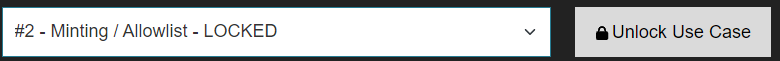

- At the bottom of the Manage/View Collection page, click on the 'Lock/Unlock Use Case' dropdown list and select a locked Use Case.
- Click the 'Unlock Use Case' button.

- Execute the transaction. Your wallet will be unlocked, and it will start accepting incoming delegations for that specific use case on the collection.